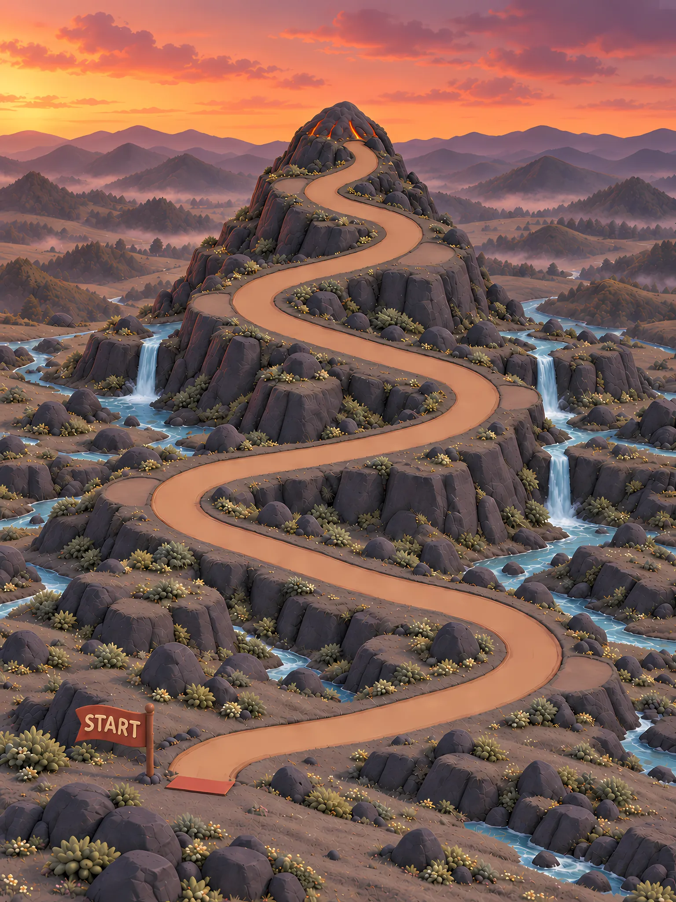

GrammarLens
 966 to Bronze+9
966 to Bronze+9Good evening, Ada
DAILY TESTDone
Day 1 complete!
+9 points · step 1 reached
Mountain of Learning

November1 / 30Step 2 opens tomorrow
TODAY’S TICKET
1 free practice
Use it on: The With Superlatives
Topic practice
PREMIUMMaster any topic with personal AI feedback.
PICKED FOR YOUArticlesYour weak spot today · 0% mastered
Gerund vs. Infinitive
Modal Verbs
Modal Past Forms
Tense Selection